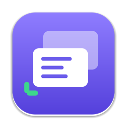
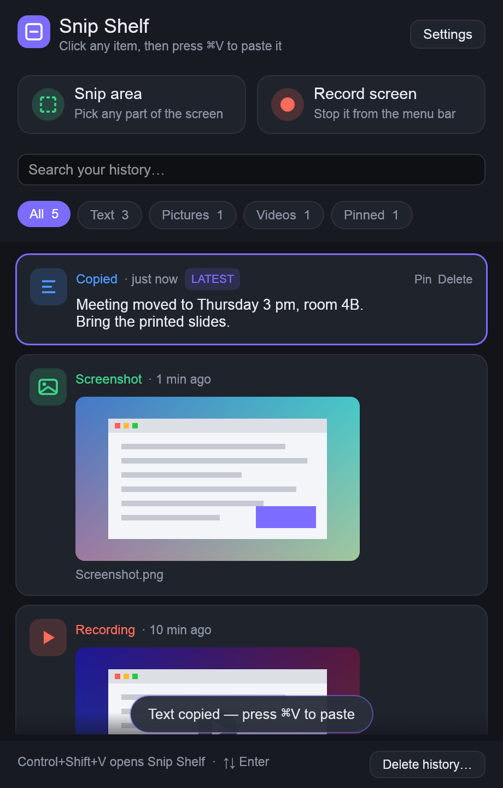

The free clipboard manager for Mac
Snip Shelf keeps a history of everything you copy, plus your screenshots and screen recordings. Like Win+V and the Snipping Tool on Windows, made for macOS. Click any item, then press ⌘V.
Download for Mac (free) View on GitHub6 MB · macOS 11 or later · Apple Silicon & Intel · Open source (MIT)

Everything you copy, in one place
Clipboard history
Every text, picture and file you copy with ⌘C is saved and searchable.
Screenshot history
Screenshots from ⌘⇧3, ⌘⇧4 and ⌘⇧5 appear automatically with previews.
Screen recordings
Recordings are kept too. Click one and paste the video into any chat or email.
Snip & Record
Built-in buttons to capture part of the screen or record it, copied straight away.
Always one shortcut away
Press Control+Shift+V anywhere, or use the menu-bar icon.
Private & light
Nothing leaves your Mac. Password-manager copies are skipped. Pin what you want to keep.
Install in a minute
- Download SnipShelf.dmg from the latest release.
- Open it and drag Snip Shelf onto Applications.
- First launch: if macOS blocks it, open System Settings → Privacy & Security and click Open Anyway.
- Press ⌘Space, type “Snip Shelf”, and start copying.
Questions
Is there a clipboard history on Mac like Win+V?
macOS has no built-in clipboard history. Snip Shelf adds one: press Control+Shift+V to see everything you copied.
How do I see what I copied earlier on my Mac?
Install Snip Shelf. From then on everything you copy appears in its list. Search it, filter by text, pictures or videos, and click to copy again.
Can I paste an old screenshot or screen recording?
Yes. Click its card, then press ⌘V in Messages, Slack, Mail, Notes or Finder.
Is it free? Is my data uploaded?
It's free and open source. Everything stays on your Mac.
Why does a screenshot show up a few seconds late?
macOS saves a screenshot only after its corner preview disappears. Turn on “Instant screenshots” in Snip Shelf's Settings.